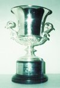
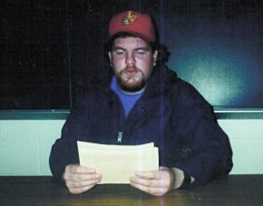

COLLEGE PARK, MD--20-year-old Josh Allen, president-elect of the Maryland Academic Quiz Team, has announced that the team will reaffiliate with College Bowl, Inc., for the 1999-2000 season, after a ten-year absence.
|  | |
| Above: The 1981 CBI Nationals trophy. |
"There has been a change in the leadership of the MAQT," Allen explained. "We have suffered too long under the brutal tyranny of the mind-numbing ACF format."
Josh gained the presidency over incumbent Julie Singer in the recent elections as head of the "White and Yellow" party. His first act was an order to confiscate all copies of Benet's Reader's Encyclopedia, Janson's History of Art, and other reference books of an academic nature. After careful consultation with his advisors, Allen decided to allow players to possess An Incomplete Education due to its "What You Need to Know to Meet Your Date's Parents" section. Each freshman was then given a copy of the 1999 World Almanac and a one-year subscription to Newsweek.
As part of the $300 "starter kit" for new schools, the MAQT will receive unlimited use of the www.collegebowl.com website, a catalog of custom prize merchandise, and the College Bowl Program Guide.
"We are very pleased with the University of Maryland's decision to reenroll into the CBI community," College Bowl President Richard Reid said. "During the last ten years, I often felt sorry for the students at Maryland who had no outlet for quiz bowl competition because of their decision to deaffiliate from College Bowl. Since the opportunity to play College Bowl was available for the low cost of $600 per year, I can only wonder why it took them so long to return."
The real history of the team was unknown to all but a certain few of its members until a few months ago. Through players like Matt Colvin, freshmen were indoctrinated into the Sacred Teachings of the Vish-Nu. According to the Vish-Nu, after a period of strife known as the "Great Flame War," the team was formed in 1990 when a golden buzzer system came down to Ramesh Kannapan from the sky. Ramesh and his pupils John Nam and Carol Guthrie formed the Academic Competition Foundation in order to spread the Word. After seventy-two days, seventy-two players had compiled texts of all known ACF knowledge. Miraculously, all players had prepared one identical book, now commonly known as Benet's. This hallowed text is bestowed upon each team member after he can recite all of the definitions in the team lexicon.
Earlier this year, 17-year-old freshman Chad Groft, while rummaging through the bottom of a box of questions, discovered an odd assortment of yellow and white papers which had been carelessly left behind by alumnus Arthur Fleming. Groft took these questions to freshman practice, where they were heard by other younger players.
|  | |
| Above: A MAQT member reads CBI questions during a recent practice. |
Groft related, "Dave [Hamilton] had chastised us at the previous practice after no one answered a tossup on Michael Kolhaas, by Heinrich von Kleist. He told us that we would never amount to anything if we couldn't distinguish between Kleist's major works, and if we couldn't recognize the titles of his lesser known plays and key events in his life as related by Benet's. He also told us not to bother coming back next week if we hadn't memorized his birth and death dates. I talked to my English professor, and he had never even heard of Kleist. When we read these from the strange yellow papers, I found that I had actually heard of some of the answers, and noticed that most of them related to real life. For instance, one tossup entreated us to name a curved, yellow, fruit, and I instantly buzzed in with the correct answer. I have first-hand knowledge of bananas, and have even eaten them on occasion, usually in delicious candy form. In addition, I have enjoyed the music of Bananarama, and the goofy hijinks of Bananas in Pajamas and the Banana Splits. Any format which can connect with so many facets of the human experience must be superior to ACF."
Groft added, "I bet Kleist ate bananas."
The radical ideas of players like Groft led to subversive demonstrations against ACF at practice, including the reading of so-called "trash" questions, on topics which could be answered without the usual 4-5 years of intense study required to successfully get questions at tournaments like the Terrapin. In February, freshman Patrick Schmahl derisively chanted "List! List!" while senior Zeke Berdichevsky was rattling off answers in a title-author bonus from a 1997 Tennessee Masters packet. Patrick was quickly escorted from the room and silenced, but the effects were devastating.
Graduate student Michael Starsinic expressed his dismay at the results of the recent election. "The consequences of Josh's reforms are all too apparent. Just yesterday, I asked [freshman] Andy Hu who won the Nobel Prize in Economics in 1989, and he laughed and cruelly mocked me. I shudder to think about the state of the MAQT when players no longer have respect for cultural icons like Trygve Haavelmo."
Julie Singer was unavailable for comment, as she had not finished memorizing her list of the 50 most important Sumerian Love Poets.
Yes, I know that the layout of this page was blatantly copied from The Onion.
Why don't you go visit their website?
Thanks to Josh Allen for his input (that's him in the photo).